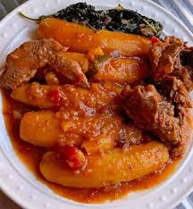
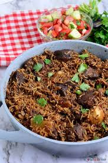

Bring water to a boil in a heavy pan that does not burn easily.
Add half of the millet and using a wooden spoon,
stir briskly ensuring all the water becomes absorbed and the bread is thick.
Lower the heat and keep stirring, adding more flour and water as needed. Ensure there are no lumps.
Karo is usually served in a traditional basket. You may cut into small portions suitable for your guests.
Katogo

Boil bananas with salt and water for about 7 minutes on high heat.
Meanwhile, melt butter in a pan, add ginger garlic paste and fry until aromatic.
Add fresh coriander and fry until aromatic.
Add onions and drained beef, fry until golden brown.
Add spiced and stir until well coated.
Add tomato paste and stir, then tomato puree.
Add beef stock, stir and let simmer a few minutes.
Add to bananas as it starts to yellow, reduce heat to low and let simmer gently until tender.
Serve as desired.
Pilau

Toast and blend the pilau masala: In a medium saucepan over medium heat.
Brown the onions by frying it in oil until it caramelizes. This should take about 10 to 15 minutes.
Stir in the Garlic, ginger and serrano pepper.
Add the meat stock cubes, pilau masala, cilantro, bay leaves, and salt to taste and brown the meat for about.
Stir in the tomatoes and cook till it dissolves. Then stir in the potatoes.
Add water and bring everything to a rolling boil and leave the potatoes to cook for about 10 minutes.
Stir in the rice then cover tightly. You can use an aluminum foil to cover it first, this will help keep the steam in.
Then place the lid over it and leave to cook on a low heat for 20 minutes until the liquid has been absorbed.
Serve hot! You can sprinkle the rice pilaf with some chopped cilantro, then fluff with a fork. Enjoy.